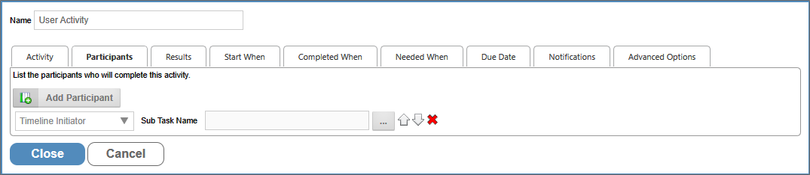
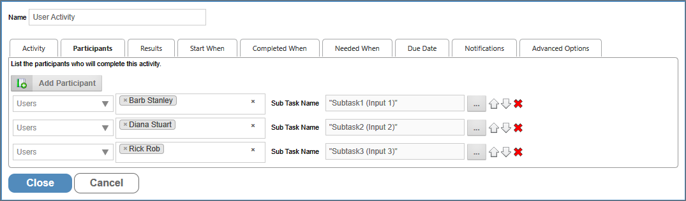
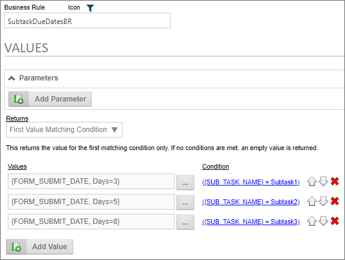
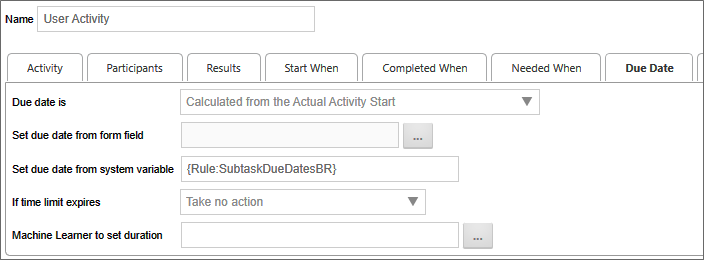
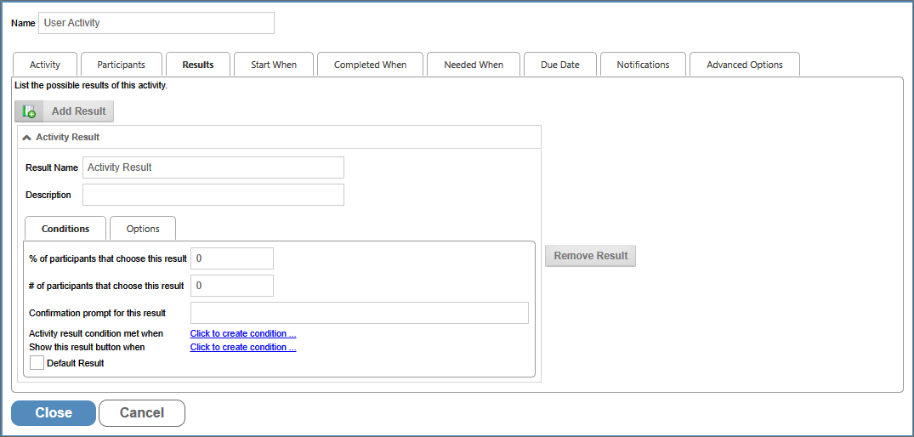
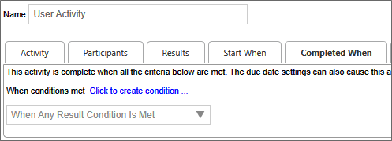
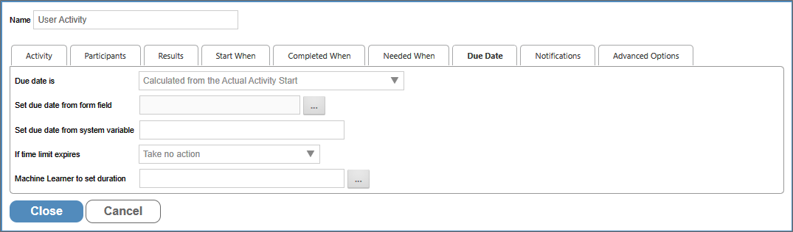
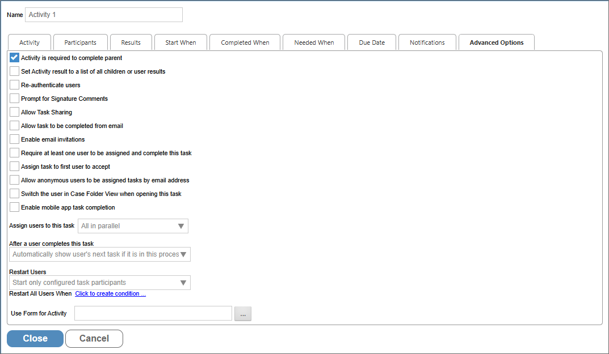

If your process includes tasks for unauthenticated users, please refer to the documentation on Anonymous Users for special concerns that may apply to some settings.
If your process includes tasks for unauthenticated users, please refer to the documentation on Anonymous Users for special concerns that may apply to some settings.The user Activity is used to create an actionable item assigned to a user. In addition the User Activity creates a Task that is assigned to one or more users. The Task governs the actions the user must complete and when. The User Activity configures how the Task will be assigned and completed, while the Task is the object that governs how the user interacts with the system while the Task is running.
Because User Activities always assign a Task to a user, the terms 'User Activity' and 'Task' are often used interchangeably. Technically, the Task is a separate object from the User Activity in the Process Director system, but both are inextricably linked, and are initiated, run, and completed in tandem. From the end user's perspective, the User Activity and Task are essentially indistinguishable; however, from an implementer's perspective these objects are not the same. When creating a condition, the dropdown menu for the Choose System Variable dialog box has separate groups for Tasks and Timeline activities, each with their own attributes to access.
The Task options are only relevant to a user Task, while the Timeline Activity options are applicable to all Process Timeline activity types. The Task—which, again, is an inextricable part of a User Activity—has some evaluable properties that are not relevant to other types of Timeline Activity and are only useable when a user Task is running.
The distinction between the two is not enormously important, but it's something to keep in mind as an implementer, especially when building conditions related to User Activities. Some of the conditions you might wish to evaluate can only be found in the Task group of the dropdown menu. Similarly, the Task group is not relevant for creating conditions for non-User activities.
When a User activity starts, task assignment to the configured participants runs immediately, and only runs once. If there are any running or completed instances of the Process Timeline, changing the Timeline definition will not affect them. Once the Task assignment has been made for an activity, the only way to change it in a running activity instance is to open the Process Timeline instance, open the properties for the running activity, and manually change participants or, if the configured participants have been changed, restart the activity. Both of these actions are an administrative intervention in the running instance.
The important thing to remember is that Task assignment can only occur once, and only when the activity starts running. Only the participants who are configured when the activity starts will be included in the task assignment.
You should also note that the Restart Users property, described below in the Advanced Options Tab section, may still restart some previously assigned users, based on the settings chosen. This property should be set to Start only configured task participants to ensure that only the currently configured users are assigned to the task upon restart.
If a Task has been assigned to a user, it will appear in the user's Task List. The user must complete the task before it can be removed from the Task List. A user who is assigned a task will be automatically given permission to any object in the Process Timeline package so they may complete the task. Examples of this task can be an approval task or update task.
When a Task is assigned to a user with an invalid UID or user ID, Process Director will immediately stop the process, and place the Process Timeline Activity into an error state. This is also true for anonymous user assignments if the email address isn't a valid format (Process Director can't validate the email address itself, only the format).
If your process includes tasks for unauthenticated users, please refer to the documentation on Anonymous Users for special concerns that may apply to some settings.
In addition to the common properties tabs that appear for all Timeline activities, the configuration settings below are unique to this Activity Type.
The example below walks through the process of configuring a User Activity.

Determines which users are a participants of the user task. Users can be added via the Add Participant button, and the participants can be specified via the Participant Type dropdown.

When multiple users are assigned to a task, a Subtask can be created for each user. You must have a form field that specifies the name of each desired subtask.

In this example, each user is assigned a Subtask Name from a different form field, i.e., Subtask1Name, Subtask2Name, and Subtask3Name. When the users are assigned their task, Both the Task Name (which is the Activity's Name) and Sub Task Name will be assigned to them, so that you can track both the task and subtask for each user as they are completed.
For Process Director v 6.0.100 and higher, each subtask can have a unique due date, assigned via a System Variable. Unlike prior versions, where a single due date was assigned to both the Timeline Activity and all of it's included subtasks, you can now configure a Business Rule to return a unique Due Date for each subtask, based on any evaluable condition, such as the Sub Task Name.

In this example, the Business Rule, named SubtaskDueDatesBR, will return one of three different due dates, based on the name of the Subtask, e.g. "Subtask1", "Subtask2", or "Subtask3". On the Due Date tab of the Timeline Activity, this Business Rule is reverenced in the Set due date from system Variable property to provide the appropriate due dates for each subtask.

Since each subtask is assigned to as different user, Process Director will pass the Sub Task Name for that user to the Business Rule when the subtask is assigned, which will return the unique due date for each subtask participant.
The Results Tab appears when either the User or Wait Activity Types are selected. The Process Activity also has a result, which is generated automatically, and is explained in the "Results of a Process Activity" section below.

A user Activity in the Process Timeline can have results assigned to it. Multiple results can be added to an Activity by clicking on the Add Result Button. Each result will have its own properties, which are presented in a tabbed interface.
The results will be used as the Activity result for the task, which will appear in the Routing Slip and in the Timeline Administration screen.
The name of the result, which will appear on all Forms, and as the completed result in the Timeline instance, if the result is selected by a user.
A brief text description of the result.
This is one of the two tabs displayed for each result's configuration settings. The Conditions Tab includes the following controls.

If the specified percentage of users select this result, the task will be considered complete, with this result recorded as the Activity result. For example, if you wish the task to be concluded when 75% of users select this result, then the value you'd place in the text box would be "75".
If the specified number of users select this result, the task will be considered complete, with this result recorded as the Activity result. For example, if you wish the task to be concluded when 3 users select this result, then the value you'd place in the text box would be "3".
If a user selects this result, the specified confirmation prompt will be displayed to the user, requiring the user confirm this selection before it is recorded.
This enables you to select a condition, or conditions, which, when met, will complete this task with the result recorded as the Activity result.
 When setting an Activity result condition, you must set the Completed When dropdown to "When Any Result Condition Is Met" to complete the Activity on the Completed When tab of the Activity definition.
When setting an Activity result condition, you must set the Completed When dropdown to "When Any Result Condition Is Met" to complete the Activity on the Completed When tab of the Activity definition.

This enables you to select a condition, or conditions, which, when met, will display this result option to the user. If the condition(s) aren't met, the result button won't be displayed to users.
This is a check box that, when checked, designates the result as the default result for the Timeline Activity. When setting a Completed When condition, you must specify a default result, or the Activity will either not end as expected, or will go into an error state.
This is one of the two tabs displayed for each results configuration settings. The Options Tab includes the following controls.

This is a numeric value that determines the order in which the Activity result button will appear on a Form. You may order the Activity results in any order you desire. If you don't order the buttons manually, they'll be displayed in the order in which the result was created. In older versions of Process Director, Process Timeline Activity results were specified using a comma-separated list. The display of the buttons on the form for each result followed the order in which they were listed. Now, when migrating from an older release to this one, the display order of the results will be automatically preserved. To modify the order, adjust the "Button Order on Form" property of each result in the Activity Results tab.
Clicking on the icon allows you to select a custom icon from a list. The selected icon will appear on the Activity result's button on the Form.
The setting enables you to select a background color for the result button that will appear on the form.
The setting enables you to select a text color for the result button that will appear on the form.
This text box will accept a comma-separated list of string values. For tasks that can be completed by email, a user can complete the task by replying to the task assignment email with one of the strings in the list you enter into this control. For example, the result displayed above is the "Reject" result. You might put the following list of responses into this control: "Reject, No, Disapprove, Rejected, Not Approved". If a user replies to the task assignment email with "No"—or any of the other possible responses in the list—as the body of the email message, the Reject result will be recorded as the Activity result.
If this option is selected, then, if the user selects this result, then the Results Comments control in the Form can't be empty.
If this option is selected, then users can complete this task from their Task List without opening the Form for the process.
This feature requires the use of a custom Task List that includes a column to display the results.
When the user completes a task from the Task List, Process Director will display a small popup that indicates the task completion is in progress. Additionally, if the result selected is configured to require completion comments, Process Director will prompt the user for the comments before completing that task.
The size of the prompt and confirmation dialogs won't usually need to be changed, however, if, for some reason the size does need to be changed, there are custom variables available to change the width and height of the dialogs: nTaskCompleteDialogWidth, nTaskCompleteDialogHeight, nTaskCompletePromptDialogWidth, and nTaskCompletePromptDialogHeight. Documentation for these four custom variables can be found in the Miscellaneous Custom Variables topic of the Developer's Guide.
Check this box to specify that a given Activity result will cause validation to be skipped. The feature is especially useful for steps/activities that include an option for the user to abandon or reject a form, which the user should be able to accomplish without, for example, filling in all required fields.

The standard options for the Due Date tab are described in the Due Date Tab section of the Timeline Activities topic. The User Activity Type also has an additional option specific to the User Activity Type.
A dropdown that specifies the actions to take when the Due Date expires. The following options are available.
|
Option |
Result |
|---|---|
|
Take no action |
Lets the Activity continue running. |
|
Cancel This Activity |
Cancel the Activity and automatically advance to the next Activity in the Process Timeline. |
|
Add These Users from Business Rule |
Add users identified in the Business Rule. |
|
Replace existing users with those in Rule |
Add the user from the Business Rule and cancel any running users. |
|
Cancel the entire Timeline |
Cancel the Process Timeline. |

This tab provides many additional settings for controlling task assignment, completion, Activity restarts, and more, as described below.
Checking this option won't allow a parent Activity to complete until this Activity is complete. This is the default option. This usually applies to an Activity that is organized under a Parent Activity Type. If this Activity doesn't complete, then the Parent Activity can't complete.
By default, the Result of a user Activity that is completed by multiple users will be the single result selected by most users. For instance, if two users pick Reject and one picks Accept, the Activity result is set to "Reject". In the case of a tie, e.g., if one user selects Accept and one Reject, the Result is set to "Accept, Reject". Selecting this option on a user Activity causes the Result to be set to the comma-separated union of all Results selected by users. So, in the first example above, the Result would be set to "Reject, Reject, Accept" or some similar result. The order of the results in the results list isn't guaranteed.
Forces users to re-authenticate prior to completing a task. For example, when this option is selected, built-in users will be presented with a login screen, requiring them to log in prior to completing the task, even if they are currently logged in to Process Director. This is an extra security precaution.
Checking this option will cause a prompt to appear to users to enter signature comments when completing the task.
Checking this option will enable task sharing through the Shared Delegation feature. If this option isn't checked, this task won't be available for Shared Delegation.
Checking this option will enable users to complete the task by replying to an email without opening the Form associated with the Activity or Process Timeline. Process Director can monitor an email inbox, import and parse the emails, and search for specific text in the email to determine the result. If a possible result for an Activity is "Approved", a user can reply with the word "Approved" in the body text of the reply, and Process Director will complete the Activity with the result of "Approve".
Checking this option will enable users to invite others to perform the user task by forwarding the task assignment email to them. The task assignee can forward the email to a desired alternate, for example, and when that alternate clicks on a completion link in the email, the task will be completed with the appropriate result, and with an annotation that the task was completed by the users invited by the original task assignee.
If this option is checked, at least one user will be required to complete the task, or the task can't complete. Depending on how the task assignment is configured, it's possible that no users will be assigned to the task in certain scenarios. For instance, if a task restarts after all users have completed their assignment, and the assignment is set to "Start users that did not complete previously" there will be no available user to which the task can be re-assigned. Checking this option will assign the task to one of the previously completed users.
For Process Director v6.1.500 and higher, this property and the next property, Mark as not needed if no users assigned, are mutually exclusive. Checking this property will automatically disable the other property.
If an administrator cancels a user in an Activity where this option is set, the Activity will go into an error state. The administrator will have to cancel the Activity to cause it to move on.
For Process Director v6.1.500 and higher, this property, when checked, will immediately complete a Timeline activity as Not Needed when no particpants have been assigned to the activity.
This property and the previous property, Require at least one user to be assigned and complete this task, are mutually exclusive. Checking this property will automatically disable the other property.
Checking this option will, when the task is assigned to multiple users, allow the first user to accept the task to be assigned to complete the task. When the task begins, all of the configured users will receive a Task List item that requests them to accept the task. When opening the Form, an Accept Task button will be displayed at the bottom of the Form. When any of the configured users clicks the Accept Task button, Process Director will remove task acceptance request from the Task List of all the other configured users, and the task will be assigned solely to the user who accepted the task.
Checking this option will enable anonymous users to complete a task based on the user's email address. This is a required option when using the Email Anonymous Task List system variable. In the vast majority of use cases, however, the email address will be taken from a Form field identified on the Participants tab.
Access to Process Director for unauthenticated or anonymous users is enabled for Cloud and Subscription licenses. On-premise licenses using the legacy Tiered licensing model require an additional, optionally licensed component.
If this task is part of a Case Management application, checking the property will automatically display the Case Folder view when the user opens the task.
For Process Director v6.1.300 and higher, customers who use the Mobile Application component can, by checking this option, export user tasks to the Mobile Application for completion. Similarly, the most recent version of the Mobile Form Import Custom Task will automatically import user tasks and their status from the Mobile Application when invoked.
This option enables you to select how you wish to assign a task when multiple users are associated with the same task. You have the following options:
|
OPTION |
DESCRIPTION |
|---|---|
|
All in parallel |
All users will be assigned the task at the same time, and will complete their actions at the same time as the other users. |
|
All in series |
Each user will be assigned the task individually, and each user must complete the assigned action before the task is assigned to the next user. The process will continue until all users have completed their actions. |
|
One (Round Robin) |
Only one user will be assigned the task each time an instance of the Timeline is run. Each time an instance is run, a different user will be assigned the task until all users have been assigned an instance of the process. This will divide the assignments equally among all assigned users. |
|
One (fewest tasks in this process) |
Only one user will be assigned the task each time an instance of the Timeline is run. Process Director will assign the task to the user who has the fewest number of active tasks pending in this process. This method assigns the task to the user who has the smallest workload in this process. |
|
One (fewest tasks overall) |
Only one user will be assigned the task each time an instance of the Timeline is run. Process Director will assign the task to the user who has the fewest number of active tasks in their Task List. This method assigns the task to the user who has the smallest overall workload. |
This option determines how a user's tasks are displayed when a user is assigned two sequential tasks in a process. The default in Process Director is to automatically show the user's next task if it is in the current process.
For example, if a user completes a task in a Form, and is also assigned the next task in the sequence, once the user clicks the OK or other task completion button on the Form, the Form won't close, but will simply redisplay itself to allow the user to complete the next task in the sequence. For various reasons, you may wish to override this behavior, in which case the Form will close once the first task has been completed, and the user will have to re-open the Form to complete the next task in the sequence.
You have the following options for configuring the behavior of Process Director:
|
OPTION |
DESCRIPTION |
|---|---|
|
Automatically show user's next task if it is in this process |
This is the default behavior, and will automatically redisplay the Form once the user completes the first task in the sequence. |
|
Automatically show user's next task if it is for this step in a different process |
This selection will automatically show the user's next task if the user is assigned a task in another process. For instance, if the current task starts a subprocess, and the user is assigned a task in the subprocess, the subprocess task will automatically be displayed. |
|
Do not show the user's next task |
Once a user completes the task, the Form will close, and the user must reopen the Form from the Task List to begin performing the next task. |
|
Automatically show user's next task if it is for any step for any related sub- process. |
This selection will automatically show the user's next task if the user is assigned a task in either the current process or related sub-process. |
This option determines how participants are assigned to the Activity when it must be restarted, which is particularly relevant when an implementer changes the participants assigned to an Activity in the Process Timeline definition. An existing instance may have been created when different participants were configured to participate in the task. This option enables you to determine how to handle user assignments when the configured users have changed.
It is also important to note that the term "restart" is used for both:
In either case, the Restart Users options you select will be applied.
The following options are available:
|
OPTION |
DESCRIPTION |
|---|---|
|
Start only configured task participants |
This option will assign the task to the currently configured users, irrespective of which users may have been previously assigned to the Activity. |
|
Start configured and users all previously run in this task. |
By choosing this option, you ensure that both the currently configured users, as well as any users who were previously assigned the task, are assigned the task. |
|
Start only users that previously completed this task |
This option will assign the task only to users who completed the task when it was previously run for this instance. Those users will be re-assigned the task irrespective of whoever is currently configured for task assignment in the Process Timeline definition. |
|
Start from last completed user |
If multiple users are assigned to the Activity instance, this option will re-assign the Activity to the last user who completed it when it was initially run. |
|
Start users that did not complete previously |
If multiple users are assigned to the Activity instance, this option will assign the task to users who did not previously complete it. For instance, if the Activity uses a round-robin assignment, the Activity will be assigned to one of the users who were not assigned it on the initial run. |
This will allow you to specify a Form to use in this Activity. This controls the form displayed when a user opens their Task List.
This property enables you to specify a system variable that can return users who will be given shared task permission for this specific Activity. This enables dynamic task sharing per each Timeline Activity, as opposed to the normal task sharing, which is set universally.
To view the documentation for other Activity Types, you can navigate to them using the Table of Contents displayed in the upper right corner of the page, or by using one of the links below.
Notify: This Activity Type sends email notifications to users who aren't participants in the process.
Process: This Activity Type invokes a different process that will run as a separate, synchronous subprocess.
Script: This Activity Type enables you to invoke a custom script.
Custom Task: This Activity Type invokes a Custom Task to run when the Activity starts.
Form Actions: This Activity Type enables you to manipulate the Form used for the process.
Branch: This Activity Type enables you to change the operation of the Process Timeline to invoke a specified Activity.
Parent: This Activity Type serves as a container for other activities and to create a looping segment in a Process Timeline.
End Process: This Activity Type enables you to conditionally end a process.
Wait: This Activity Type enables you to pause a Process Timeline.
Case: This Activity Type enables you to manipulate the Case instance that is associated with the Process Timeline.